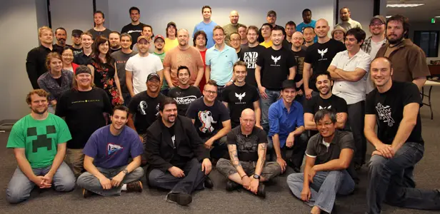

2002 : Fondation du Studio sous le Nom de 2002 Interactive
Les anciens développeurs de Medal of Honor, Jason West et Vince Zampella, ont fondé 2002 Interactive, un studio de jeux vidéo prometteur qui allait plus tard devenir Infinity Ward.
Infinity Ward est un studio légendaire, créateur de la célèbre franchise Call of Duty. Explorez son parcours, de ses débuts sous le nom de 2002 Interactive à sa création de Respawn Entertainment, l'un des studios les plus innovants de l'industrie du jeu vidéo.
Les anciens développeurs de Medal of Honor, Jason West et Vince Zampella, ont fondé 2002 Interactive, un studio de jeux vidéo prometteur qui allait plus tard devenir Infinity Ward.
En 2003, le studio change de nom pour devenir Infinity Ward et lance le jeu qui va révolutionner les jeux de tir à la première personne : Call of Duty.
Le succès de Call of Duty attire l'attention d'Activision, qui acquiert une part importante du studio, ouvrant la voie à la création de suites à succès.
Modern Warfare marque un tournant pour Infinity Ward, avec l'introduction d'un gameplay moderne et un mode multijoueur révolutionnaire.
Après des tensions avec Activision, les fondateurs Jason West et Vince Zampella quittent Infinity Ward pour créer un nouveau studio : Respawn Entertainment.
Respawn lance son premier jeu, Titanfall, qui sera un succès critique et commercial grâce à son gameplay innovant avec des mechas.
Titanfall 2 perfectionne l'expérience du premier jeu, offrant une campagne solo acclamée par la critique et des mécaniques de jeu avancées.
Apex Legends a surpris tout le monde avec son approche innovante du genre Battle Royale, attirant des millions de joueurs et consolidant la réputation de Respawn.